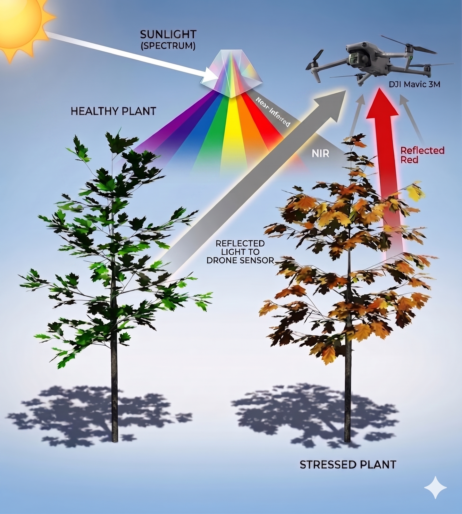

Precision Agriculture • Southeast Texas Farmers
Make Better Decisions with Multispectral Mapping
See exactly what your crops need — before the naked eye can. Cut fertilizer costs by up to 20%* and boost yields with data-driven precision.
See exactly what your crops need — before the naked eye can. Cut fertilizer costs by up to 20%* and boost yields with data-driven precision.
Use less fertilizer, growth regulator, and defoliant by applying only where crops actually need it.
Find pests, fungus, and irrigation issues weeks before they become visible — and before they cost you.
When it's time to make important decisions about your crops, don't you want the best information available?
We use enterprise-grade DJI Mavic 3 Multispectral to capture Near-Infrared (NIR) light — showing you plant stress that the human eye simply cannot see. Our NDVI maps highlight nutrient deficiencies, irrigation gaps, and pest pressure early enough to act on them.
Maps can be imported directly into your Variable-Rate Application (VRA) sprayers.
Specific applications for the crops grown across Southeast Texas.


Healthy plants strongly reflect Near-Infrared (NIR) light, while chlorophyll absorbs almost all red light for photosynthesis.
In a healthy crop, there is a massive difference between high NIR reflection and low red reflection. As a plant becomes stressed, its cellular structure degrades (reflecting less NIR) and chlorophyll breaks down (reflecting more red).
Because humans cannot see NIR light, we can't detect this shrinking difference until the plant is already visibly yellowing. Our drone sensors capture this invisible data — allowing you to intervene weeks earlier.

No strings attached. Let the data speak for itself. Fill out the form below and we'll schedule your free demo flight.